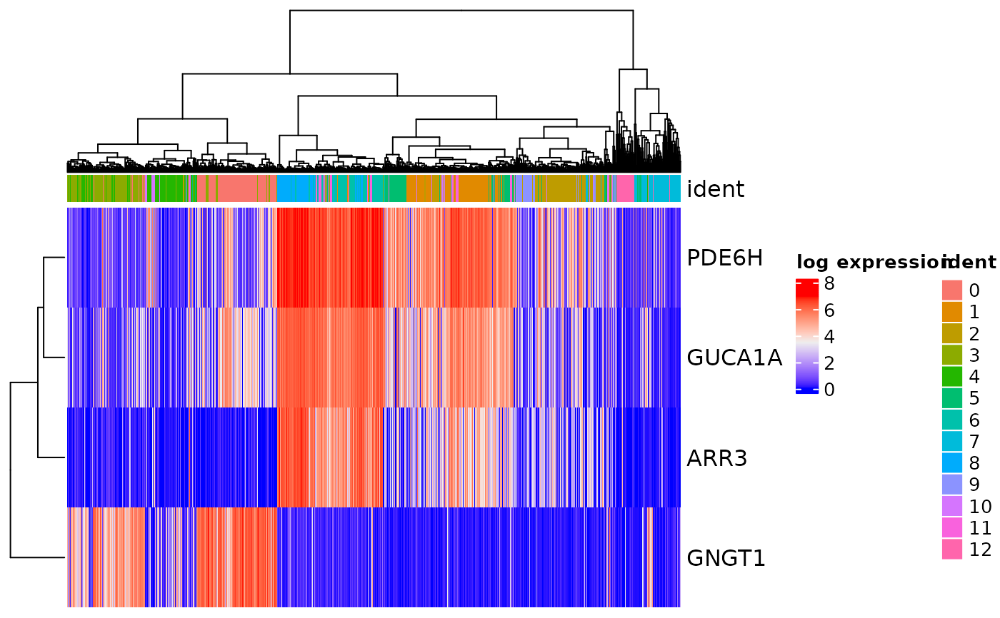

Plot Annotated Complexheatmap from SingleCellExperiment object
Source:R/plotting.R
make_complex_heatmap.RdPlot Annotated Complexheatmap from SingleCellExperiment object
Usage
make_complex_heatmap(
object,
features = NULL,
group.by = "ident",
cells = NULL,
assayName = "logcounts",
experiment = NULL,
group.bar.height = 0.01,
column_split = NULL,
col_arrangement = "ward.D2",
mm_col_dend = 30,
...
)Arguments
- object
A SingleCellExperiment object
- features
Vector of features to plot. Features can come
- group.by
Name of one or more metadata columns to annotate columns by (for example, orig.ident)
- cells
Cells to retain
- assayName
"counts" for raw data "scale.data" for log-normalized data
- experiment
experiment to display
- group.bar.height
height for group bars
- column_split
whether to split columns by metadata value
- col_arrangement
how to arrange columns whether with a dendrogram (Ward.D2, average, etc.) or exclusively by metadata category
- mm_col_dend
height of column dendrogram
- ...
additional arguments passed to Heatmap
Examples
data("tiny_sce")
make_complex_heatmap(tiny_sce)
